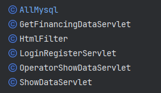

银行理财设计文档
该项目是一个简单的理财平台，提供用户注册、登录、首页展示、银行理财产品查询等功能。项目采用JS、Vue框架作为动态页面技术，Servlet处理后端逻辑，JDBC用于与MySQL数据库交互。
1. 登录系统
登录系统包含两个主要页面：注册页面 (Register) 和 登录页面 (Login)。这两个页面均设计有相应的提交表单，用户可以通过这些表单输入必要的信息以完成操作。
在注册页面，用户需要填写注册页面上的表单，包括用户名和密码，并将这些信息提交至数据库
database。
在登录页面，用户则需要输入之前注册时所创建的用户名和密码，通过提交表单将这些信息提交至数据库进行验证，从而成功登录系统。
在注册中会对数据库的数据进行检索，如果发现有重复的用户名，将会提示：用户名已被注册
在登录中同样会对数据库的数据进行检索，如果没有注册该用户名，将会提示：用户不存在
这一双重页面结构旨在提供灵活而安全的用户身份验证机制，以确保系统的可靠性和用户数据的安全性。
1.1 功能实现
1.1.1 前端实现
1. 注册页面Register和登录页面Login
注册页面Register 这一部分包含了一个图像和一个注册表单。图像中的两个div元素包含了一些文本和一个按钮。按钮的不同位置对应不同的注册或登录操作。注册表单包括两个输入字段（用户名和密码）和两个相关的帮助文本。还有一个提交按钮，点击时会触发registerAction函数。
登录页面Login 这一部分定义了一个登录表单，其中包含一个标题、两个输入框（用户名和密码）以及一个登录按钮。使用了CSS
类来定义样式，以及v-bind指令来绑定变量 {{redText}} 和 {{greenText}} 到元素的属性上。点击登录按钮时，会调用loginAction函数。
2. Vue部分功能实现
<script src="js/script.js"></script>
<script src="js/vue.js"></script>
<script>
var app = new Vue({
el: "#app",
data: {
greenText: "",
redText: "",
},
methods: {
loginAction: function () {
this.redText = "";
this.greenText = "";
let self = this;
let xhr = new XMLHttpRequest();
xhr.open('POST', '/bighome/lg', true);
xhr.setRequestHeader('Content-type', 'application/json');
// 等待服务器返回数据
xhr.onreadystatechange = function () {
if (xhr.readyState === 4 && xhr.status === 200) {
// console.log(xhr.responseText);
let data = JSON.parse(xhr.responseText);
if (data.status === "success") {
alert("登录成功" + data.message)
window.location.reload();
} else {
alert("登录失败" + data.message)
this.redText = data.message;
self.redText = data.message;
}
}
};
// 先发送数据
// 从input获取数据
let username = document.querySelector('[name="loginUsername"]').value;
let password = document.querySelector('[name="loginPassword"]').value;
xhr.send(JSON.stringify({username: username, password: password, type: "login"}));
},
buttonAction: function () {
this.redText = "";
this.greenText = "";
document.querySelector('.content').classList.toggle('s--signup')
},
registerAction: function () {
this.redText = "";
this.greenText = "";
let self = this;
let xhr = new XMLHttpRequest();
xhr.open('POST', '/bighome/lg', true);
xhr.setRequestHeader('Content-type', 'application/json');
// 等待服务器返回数据
xhr.onreadystatechange = function () {
if (xhr.readyState === 4 && xhr.status === 200) {
// console.log(xhr.responseText);
let data = JSON.parse(xhr.responseText);
if (data.status === "success") {
alert("注册成功" + data.message)
self.greenText = data.message;
} else {
alert("注册失败" + data.message)
self.redText = data.message;
}
}
};
// 先发送数据
// 从input获取数据
let username = document.querySelector('[name="registerUsername"]').value;
let password = document.querySelector('[name="registerPassword"]').value;
xhr.send(JSON.stringify({username: username, password: password, type: "register"}));
}
}
})
</script>
此部分为Vue应用程序，通过引入Vue.js和自定义的script.js文件来实现。代码中创建了一个Vue实例，设置了两个数据属性（
greenText和redText），以及三个方法（loginAction，buttonAction和registerAction）。
loginAction方法用于处理用户登录逻辑；buttonAction方法用于处理按钮点击事件；registerAction方法用于处理用户注册逻辑。在方法中，通过
XMLHttpRequest对象向服务器发送请求，并根据服务器返回的数据更新页面上的文本内容。
1.1.2 后端实现
1. 数据库实现
数据库设计
表名: servlet_save
| 列名 | 数据类型 | 约束 | 说明 |
|---|---|---|---|
usrname |
VARCHAR(100) |
NOT NULL, Primary Key |
用户名，最大长度100，不允许为空，作为主键 |
usrpassword |
VARCHAR(100) |
NOT NULL |
用户密码，最大长度100，不允许为空 |
数据库代码实现
public static void checkTable(Connection connection) {
try {
Statement statement = connection.createStatement();
String sql = "CREATE TABLE if not exists `servlet_save` (\n" +
" `usrname` varchar(100) CHARACTER SET utf8mb4 COLLATE utf8mb4_0900_ai_ci NOT NULL,\n" +
" `usrpassword` varchar(100) CHARACTER SET utf8mb4 COLLATE utf8mb4_0900_ai_ci NOT NULL,\n" +
" PRIMARY KEY (`usrname`)\n" +
") ENGINE=InnoDB DEFAULT CHARSET=utf8mb4 COLLATE=utf8mb4_0900_ai_ci;";
statement.execute(sql);
} catch (SQLException e) {
e.printStackTrace();
System.out.println("checkTable error");
}
}
这个函数使用传入的连接对象来创建一个名为
servlet_save的表，该表包含usrname和usrpassword两个列，其中usrname列为主键。如果表不存在则创建，如果已存在则不执行任何操作。函数通过执行SQL语句来实现此功能。如果执行过程中出现异常，则打印异常信息并输出checkTable error。
1.2 页面展示
1.2.1 注册页面
- 初始页面

- 注册成功

- 注册失败

提示：用户名已被注册
1.2.2 登录页面
- 初始页面

- 登录失败

提示：用户不存在
1.2.3 特色功能
左右过度切换的登录注册页面

2. 主页
在银行理财设计中，主页共包含三大模块：理财首页、银行理财、理财公告
2.1 理财首页 index
包括首页设计、数据动态响应和数据库设计三方面
2.1.1 首页设计
- 顶部标签导航：
- 显示在页面顶部，包括银行客服热线和退出登录按钮。
- 通过导航栏提供快捷方式，使用户能轻松访问其他页面。
- 以水平标签的形式展示在页面上部，包括"银行首页"、"银行理财"和"理财公告"等标签。
- 通过点击这些标签，用户可以快速切换到对应的页面，实现快速导航。
- 产品展示区域：
- 包含产品的基本信息，如产品名称、预期年化利率、投资期限、起投金额等。
- 利用Vue.js实现数据的动态绑定，使这些信息能够实时更新。
- 展示了产品的起息日和到期日，以及递增金额和投资截止时间。
- 投资进度条：
- 使用进度条展示当前产品的投资进度，即已投金额占总投资额的百分比。
- 利用Vue.js的数据绑定，实现动态更新进度条的效果。
- 用户投资交互区域：
- 提供了输入框，让用户输入投资金额。
- 使用Vue.js实现输入金额的实时响应和相关计算。
- 展示了用户账户余额和预计收益，并根据用户输入的金额计算预计收益。
- 标签页切换区域：
- 包含了产品说明、风险提示、权益须知等标签页。
- 通过点击标签，展示不同的标签内容。
- 利用Vue.js实现标签的切换和内容的动态更新。
- 底部信息区域：
- 包括关于我们、帮助中心、关注我们等相关链接。
- 显示客服热线，并提供联系方式。
- 提供网站地图、网站声明等信息。
- 响应式设计：
- 采用了响应式布局，使页面能够适应不同的设备和屏幕尺寸。
- 通过媒体查询等技术，确保在移动设备上也能提供良好的用户体验。
2.1.2 数据动态响应
该页面是一个使用Vue.js实现的动态页面，通过AJAX请求与后端交互获取数据，展示银行理财产品的详细信息，同时提供用户投资和退出登录的功能。
- data 属性
- 包含页面中需要动态展示的各种数据，如产品名称、年化利率、投资期限等。
- 用于计算和展示投资进度、剩余可投金额、账户余额、预计收益等信息。
- methods 方法
allMethodRun: 初始化页面，调用获取数据的方法。selectTab: 切换标签页的方法。startProgress: 启动投资进度条动画的方法。getShowData: 通过AJAX请求获取后端数据的方法。startCountdown: 启动倒计时的方法。padZero: 格式化数字，补零的方法。InputMoney: 处理用户输入投资金额并提交的方法。loginOut: 处理用户退出登录的方法。
2.1.3 数据库设计
表格：FinancialProducts
- 以下为示例：
| product_id | name | annual_interest_rate | start_date | end_date | incremental_amount | initial_amount | total_amount | remaining_amount |
|---|---|---|---|---|---|---|---|---|
| 1 | 安富 200110期 | 3.07 | 2023-12-02 | 2023-12-20 | 1000.0 | 10000.0 | 500000.0 | 499008.0 |
product_id是每个产品的唯一标识符，并设置为主键。name表示理财产品的名称。annual_interest_rate是理财产品的预期年化利率。start_date和end_date表示项目的起息日和到期日。incremental_amount是理财产品的递增金额。initial_amount表示起始资金。total_amount表示交易的资金总额。remaining_amount表示账户余额。
2.1.4 页面展示

2.2 银行理财 financing
这一部分内容主要是链接数据库，设计数据库并完成查询操作
2.2.1 数据库设计
表格：FinancingData
- 以下为示例：
| id | code | name | category | issuer | raise_method | sales_area | risk_level | status | net_value | latest_tip | details | notice | time |
|---|---|---|---|---|---|---|---|---|---|---|---|---|---|
| 1 | B120A0041 | 稳赢计划1240期 | 理财 | 建设银行 | - | - | 中等风险 | 正常交易 | 15000 | 有 | 建设银行理财产品，收益稳健 | 建设银行理财推荐 | 2021-05-15 |
id是每个条目的唯一标识符，并作为主键。code是理财产品的代码。name是理财产品的名称。category表示产品的类别。issuer是发行机构。raise_method是募集方式。sales_area表示销售区域。risk_level表示风险等级。status表示产品状态。net_value表示净值。latest_tip表示最新提示。details是关于产品的详细信息。notice是相关通知。time是数据记录的时间戳。
2.2.2 查询功能实现
查询功能 (search 方法)
- Vue 数据绑定： 在 HTML 中，通过
v-model实现与 Vue 实例中selectedCategory和searchCode的双向数据绑定，分别表示选择的产品类别和输入的产品代码。 - 查询按钮： 当用户点击查询按钮时，触发
search方法。 - 查询逻辑： 在
search方法中，通过console.log输出用户选择的产品类别和输入的产品代码，并使用filter函数对tableData进行过滤，筛选符合条件的数据，将结果存储在filteredData中。
methods: {
search: function () {
// 在这里添加查询逻辑
console.log('查询产品类别:', this.selectedCategory);
console.log('搜索产品代码:', this.searchCode);
// 过滤数据
this.filteredData = this.tableData.filter(item =>
(!this.selectedCategory || item.category === this.selectedCategory) &&
(!this.searchCode || item.code.includes(this.searchCode))
);
},
重置功能 (reset 方法)
- 重置按钮： 当用户点击重置按钮时，触发
reset方法。 - 重置逻辑： 在
reset方法中，重置selectedCategory和searchCode，同时恢复显示所有数据到filteredData。此外，对tableData进行分类，将数据按照产品类别存储到categoryData中。
reset: function () {
// 重置查询条件
this.selectedCategory = '';
this.searchCode = '';
// 恢复显示所有数据
this.filteredData = this.tableData;
// 对tableData进行分类，然后存储到categoryData中
this.categoryData = this.tableData.reduce((acc, cur) => {
if (!acc[cur.category]) {
acc[cur.category] = [];
}
acc[cur.category].push(cur);
return acc;
}, {});
},
2.2.3 页面展示

2.3 理财公告 notice
2.3.1 页面设计
使用了Vue.js框架。页面上包括一个顶部导航栏、一个公告列表和一个底部导航栏。顶部导航栏包括客服热线、登录/注册和退出登录按钮。公告列表显示了不同年份的公告。底部导航栏包括一些链接和版权信息。页面通过Ajax请求从服务器获取公告数据，并使用Vue.js的数据绑定功能动态更新页面。用户点击年份按钮时，会请求并显示对应年份的公告。
2.3.2 页面展示

3. 逻辑处理
主要介绍后端实现工具，实现方法等

3.1. AllMysql.java
主要功能是与MySQL数据库进行交互，包括创建表、插入数据、更新数据等操作。
- 数据库表定义：
-
定义了四张表：
user、showdata、usershowdata、financingdata。 - 每张表都有特定的字段和约束，包括主键、数据类型等。
-
定义了四张表：
- 数据初始化：
- 提供了一些初始数据的插入操作，例如
insertFinancingDataNewTabel和insertShowDataNewTabel方法，用于在表创建时插入一些初始数据。
- 提供了一些初始数据的插入操作，例如
- 数据操作方法：
- 提供了一系列方法用于执行数据库操作，包括插入用户数据、更新用户数据、获取用户数据等。
updateUserTableOfMoney方法用于更新用户表中的金额字段。checkTable方法用于检查表是否存在，如果不存在则创建表，并插入一些初始数据。
- 登录状态检查方法：
- 提供了
getLoginStatus、isCookieLogin和isSessionLogin方法，用于检查用户的登录状态，从Cookie和Session中获取登录信息。
- 提供了
- 获取数据方法：
- 提供了一些方法用于从数据库中获取数据，如
getShowData方法用于获取展示数据，getFinancingData方法用于获取融资数据等。
- 提供了一些方法用于从数据库中获取数据，如
3.2 GetFinancingDataServlet.java
这个函数是一个基于Servlet的Java程序，用于处理HTTP请求并返回相应的数据。它通过获取请求中的参数来确定返回的数据类型，并根据用户登录状态返回不同的结果。
public void doGet(HttpServletRequest request, HttpServletResponse response) throws IOException {
String type = request.getParameter("type");
if (type == null) {
System.out.println("[argv] get financing data error, the type is null");
return;
}
JSONObject loginData = conn.getLoginStatus(request);
response.setContentType("application/json");
response.setCharacterEncoding("UTF-8");
if (loginData.getString("isLogin").equals("yes")) {
if (type.equals("financing")) {
response.getWriter().write(conn.getFinancingData().toString());
} else if (type.equals("year")) {
response.getWriter().write(conn.getYearGroupData().toString());
} else if (type.equals("notice")) {
String year = request.getParameter("year");
if (year == null) {
System.out.println("[argv] get notice error, year is null");
return;
}
response.getWriter().write(conn.getNoticeData(year).toString());
}else{
System.out.println("[argv] get financing data error, the type is not match");
return;
}
} else {
System.out.println("[argv] get financing data error, the user is not login");
}
}
这个Java函数是一个HTTP
GET请求的处理函数。首先从请求参数中获取type的值，然后根据不同的type值执行不同的操作，最后将结果以JSON格式返回给客户端。如果用户已登录，可以获取融资数据、年份数据或通知数据；如果用户未登录，则提示用户未登录。如果type值不符合要求，则提示类型不匹配。如果获取数据的参数不完整，则提示参数不完整。
3.3 HtmlFilter.java
这个Java函数是一个基于Servlet的过滤器，用于拦截所有请求以.html结尾的URL。在过滤器中，可以进行拦截逻辑判断，例如重定向未登录用户到登录页面，或者根据实际需求限制访问某些页面。在示例中，如果请求路径以.html结尾，则会将用户重定向到其他页面。最后，通过调用FilterChain对象的doFilter方法，将请求和响应传递给下一个Filter或Servlet。
@WebFilter("*.html")
public class HtmlFilter implements Filter {
@Override
public void doFilter(ServletRequest servletRequest, ServletResponse servletResponse,
FilterChain filterChain) throws IOException, ServletException {
// 在此处进行拦截逻辑判断
// 例如，如果用户未登录，可以重定向到登录页面，否则继续执行下一个Filter或Servlet
// 获取请求的资源路径
String requestURI = ((HttpServletRequest) servletRequest).getRequestURI();
System.out.println("html url:" + requestURI);
// 这里简单地示例，如果请求路径以.html结尾，则重定向到其他页面，可以根据实际需求修改
if (requestURI.endsWith(".html")) {
HttpServletResponse httpResponse = (HttpServletResponse) servletResponse;
System.out.println("[argv] the page is no access");
// 如果没有拦截，继续执行下一个Filter或Servlet
httpResponse.sendRedirect("showData?page=404page");
return;
}
filterChain.doFilter(servletRequest, servletResponse);
}
}
3.4 LoginRegisterServlet.java
这是一个登录注册 servlet。init()方法用于建立数据库连接，doPost()方法用于处理HTTP
POST请求，根据请求中的type字段执行不同的操作，包括登录、注册和登出。根据操作结果，通过HTTP响应返回JSON格式的消息。
3.5 OpenatorShowDataServlet.java
用于处理HTTP请求,它从请求中读取JSON格式的数据，然后与数据库中的数据进行交互。根据请求中的金额参数，它判断是否可以进行投资，并返回相应的结果。如果投资成功，则将金额插入到数据库中。函数使用了阿里巴巴的fastjson库来处理JSON数据，并使用了MySQL数据库进行交互。
public void doPost(HttpServletRequest request, HttpServletResponse response) throws IOException {
// 读取请求体
BufferedReader reader = new BufferedReader(new InputStreamReader(request.getInputStream()));
StringBuilder requestBody = new StringBuilder();
String line;
while ((line = reader.readLine()) != null) {
requestBody.append(line);
}
// 将请求体解析为JSON对象
String jsonString = requestBody.toString();
JSONObject jsonObject = JSONObject.parseObject(jsonString);
if (jsonObject == null) {
System.out.println("[argv op] parse json error");
return;
}
if (jsonObject.getString("money") == null) {
System.out.println("[argv op] username or name is null");
return;
}
if (jsonObject.getString("money").isEmpty()) {
System.out.println("[argv op] username or name is null");
return;
}
JSONObject loginStatus = conn.getLoginStatus(request);
if (loginStatus.getString("isLogin").equals("no")) {
System.out.println("[argv op] is no login");
return;
}
String name = "安富 200110期";
String username = loginStatus.getString("username");
String money = jsonObject.getString("money");
JSONObject preData = conn.getShowData(name, username);
JSONObject ret = new JSONObject();
double newMoney = Double.parseDouble(money);
SimpleDateFormat sdf = new SimpleDateFormat("yyyy-MM-dd HH:mm:ss");
Date date = null;
try {
date = sdf.parse(preData.getString("endtime"));
} catch (ParseException e) {
throw new RuntimeException(e);
}
long timestamp = date.getTime();
if (newMoney < Double.parseDouble(preData.getString("startmoney"))) {
System.out.println("[argv op] money < startmoney");
ret.put("message", "金额小于可投起始金额");
} else if ((Double.parseDouble(preData.getString("summoney")) -
Double.parseDouble(preData.getString("havemoney"))) - newMoney < 0) {
System.out.println("[argv op] endmoney - money < 0");
ret.put("message", "金额大于可投剩余金额");
} else if (newMoney > Double.parseDouble(preData.getString("usermoney"))) {
System.out.println("[argv op] money > usermoney");
ret.put("message", "金额大于用户账户余额");
} else if (timestamp < System.currentTimeMillis()) {
System.out.println("[argv op] endtime < now");
ret.put("message", "已截止");
} else {
conn.insertOrUpdateUserShowDataTable(username, name, money);
ret.put("message", "投资成功");
}
response.setContentType("application/json");
response.setCharacterEncoding("UTF-8");
response.getWriter().write(ret.toJSONString());
}
这个函数是一个Java Servlet的doPost方法，用于处理HTTP POST请求。函数首先读取请求体，并将其解析为JSON对象。然后根据JSON对象中的money字段执行一系列条件判断，并与数据库进行交互,最后函数将处理结果以JSON格式返回给客户端。
3.6 ShowDataServlet.java
功能是展示数据。通过HTTP请求接收数据，将数据以JSON格式返回。函数还包括对用户登录状态的判断，如果用户未登录，则重定向到登录页面。